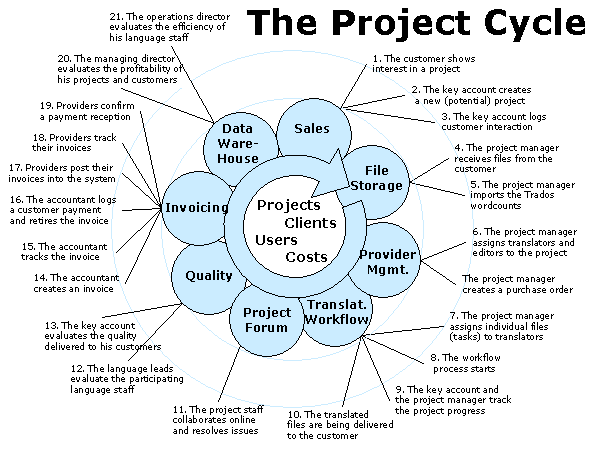

| ]project-open[ Core |
| ]project-open[ Core : Projects | ||
|
||
Projects are the central element of collaboration in ]project-open[. You can use projects to define groups of people who are working together on a common goal. You can also use projects as the primary unit of accounting that allows you to register the cost of the project members activity.
The diagram below shows a a number of activities related to a translation project.
Check the original Big Picture document from ArsDigita for the requirements of the ACS 3.4 Intranet module.
Additional requirements in ]project-open[ include:
Projects are implemented as a ]project-open[ business object just the same as companies, offices etc., using the same security mechanisms and using the same extension system (components, menus, categories, ...).
So the basic project structure only consists only of the "core" project properties such as company, start- and end date etc. All advanced functionality is added by extension modules.
create table im_projects (
project_id integer
constraint im_projects_pk
primary key
constraint im_project_prj_fk
references acs_objects,
-- avoid using the OpenACS permission system
-- because we have to ask frequently:
-- "Who has read permissions on this object".
admin_group_id integer not null
constraint im_projects_admin_group_fk
references groups,
project_name varchar(1000) not null
constraint im_projects_name_un unique,
project_nr varchar(100) not null
constraint im_projects_nr_un unique,
project_path varchar(100) not null
constraint im_projects_path_un unique,
parent_id integer
constraint im_projects_parent_fk
references im_projects,
company_id integer not null
constraint im_projects_company_fk
references im_companies,
project_type_id not null
constraint im_projects_prj_type_fk
references categories,
project_status_id not null
constraint im_projects_prj_status_fk
references categories,
description varchar(4000),
start_date date,
end_date date,
-- make sure the end date is after the start date
constraint im_projects_date_const
check( end_date - start_date >= 0 ),
note varchar(4000),
project_lead_id integer
constraint im_projects_prj_lead_fk
references users,
supervisor_id integer
constraint im_projects_supervisor_fk
references users,
requires_report_p char(1) default('t')
constraint im_project_requires_report_p
check (requires_report_p in ('t','f')),
project_budget number(12,2)
);